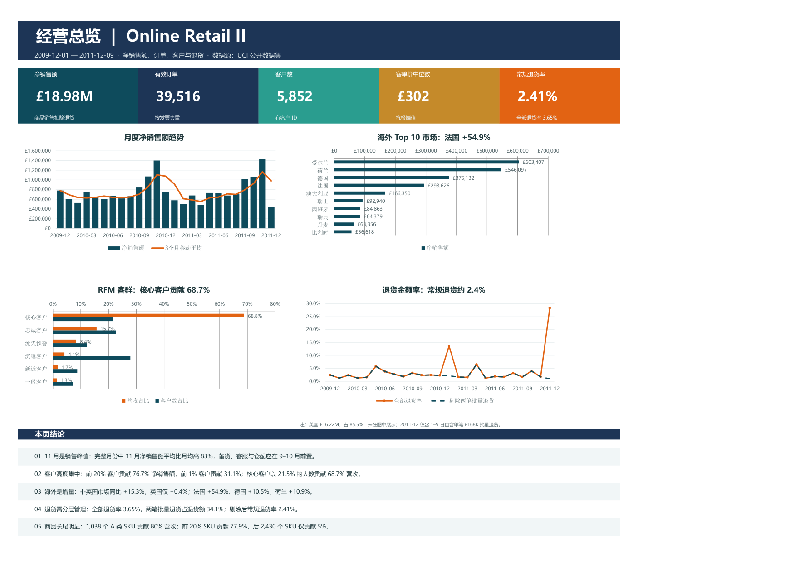
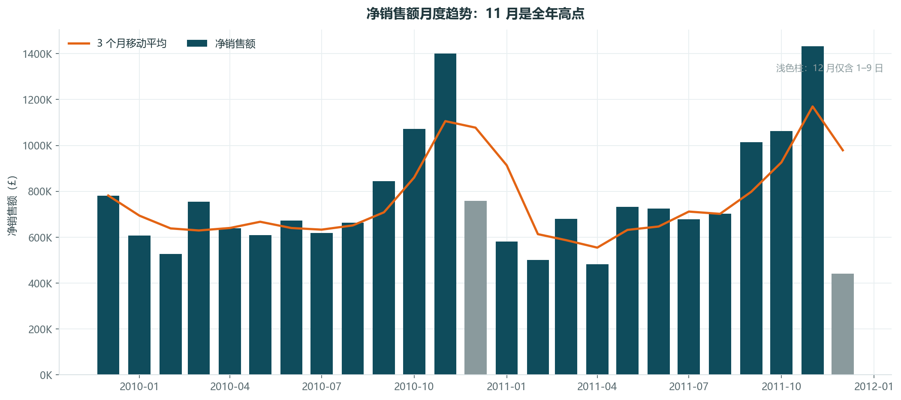
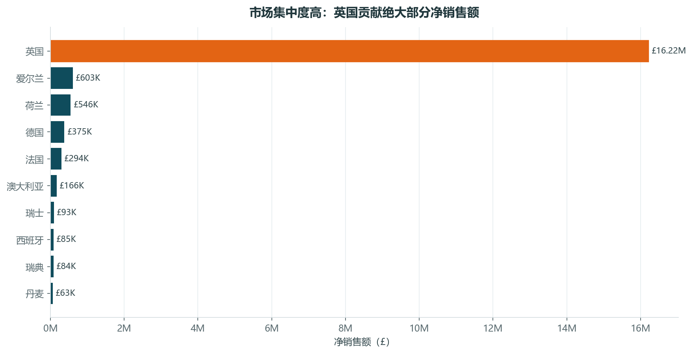
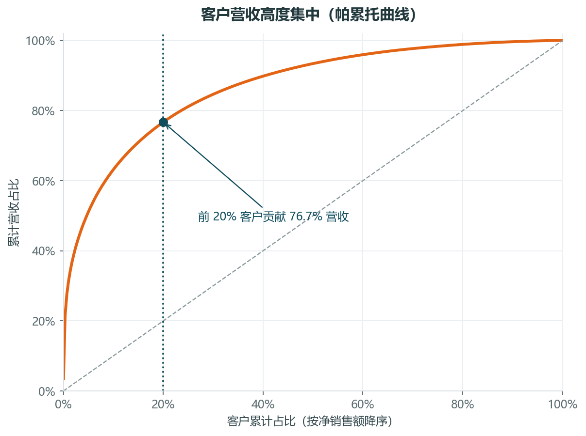
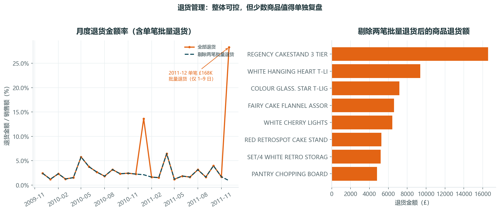
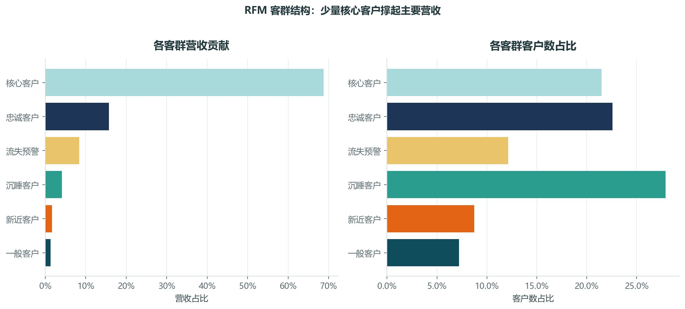
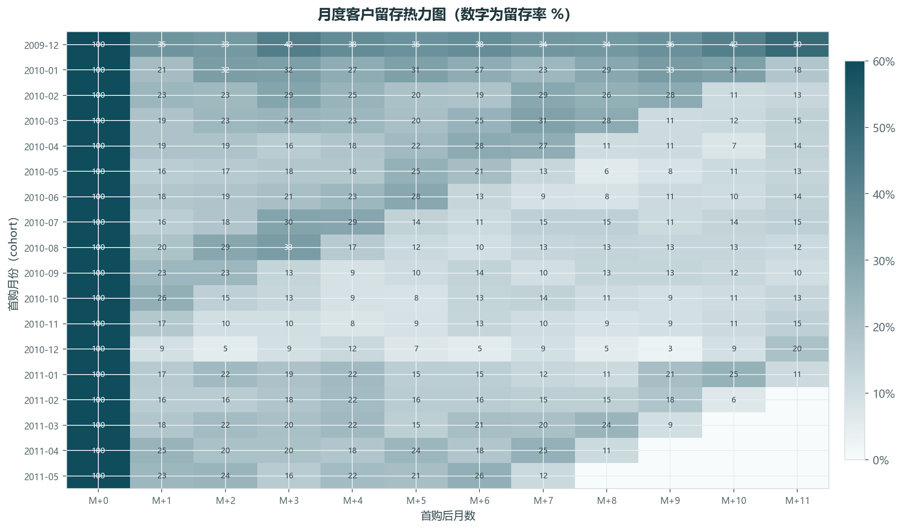

01
Q4 峰值明确，增长高度依赖 11 月
22 个完整月份中，11 月净销售额平均为月均的 1.83 倍；2011-11 净销售额 £1.43M。
建议：备货、客服与仓配前置到 9–10 月；A 类 SKU 设置 11 月安全库存。
用 106.7 万行英国在线零售交易，回答四个问题：钱从哪里来、客户是谁、增长在哪里、退货是否失控。全流程可复现，含 SQL、Python、Excel 与 Power BI 交付物。
同一套指标口径贯穿 SQL、Python、Excel 与 Power BI；点击卡片即可打开对应文件。
Excel 管理看板：一页看清营收、客户、市场与退货；下方为报表结构说明。

从原始 Excel 到可交互看板，每一步都有版本化脚本和可核对的输出。
DuckDB 读取原始表，完成行数、缺失、重复、取消单与特殊 SKU 画像；识别 2010-12 跨表重叠。
只删除跨表重复；补全商品描述；拆分销售/退货；构建 RFM、cohort、ABC 与市场同比。
Excel 做管理看板与明细；Power BI 建事实/维度模型，提供可切片的交互式报表。
把数据证据转成可执行动作：旺季备货、核心客户、海外增长、退货治理、SKU 优化。
所有图表均由 Python 从清洗后数据直接生成，保证口径一致、可复现。






每条结论都附数据证据与下一步动作，避免“只看图、不落地”。
22 个完整月份中，11 月净销售额平均为月均的 1.83 倍；2011-11 净销售额 £1.43M。
建议：备货、客服与仓配前置到 9–10 月；A 类 SKU 设置 11 月安全库存。
前 1% 客户贡献 31.1%，前 20% 贡献 76.7%；核心客户占 21.5% 人数、贡献 68.8% 营收。
建议：建立核心客户专属服务与补货提醒；对流失预警客群做召回。
非英国市场同比 +15.3%，英国仅 +0.4%；法国 +54.9%、德国 +10.5%、荷兰 +10.9%。
建议：优先深耕法国、德国、荷兰；澳大利亚先验证复购，再加大投入。
全部退货金额率 3.65%；两笔批量退货占退货额 34.1%；剔除后常规退货率 2.41%。
建议：批发取消与消费者退货分开考核；高退货金额商品做质检与包装复盘。
1,038 个 A 类 SKU 贡献 80.0% 营收；前 20% SKU 贡献 77.9%；2,430 个 C 类 SKU 仅贡献 5.0%。
建议：A 类保供保曝光；B 类做组合与价格测试；C 类按动销与退货率逐步淘汰。
关键判断：2010-12 两张年度表重叠 9 天，产生约 2.28 万条跨表重复；只删除跨表重复，保留同表内可能的真实重复录入。
| 指标 | 数值 | 说明 |
|---|---|---|
| 原始行数 | 1,067,371 | 两张年度工作表合并 |
| 跨表重复删除 | 22,844 | 仅处理 2010-12 重叠期 |
| 清洗后行数 | 1,044,527 | 保留同表内重复记录 |
| 原始缺少客户 ID 行数 | 243,007 | 占原始行约 22.8% |
| 清洗后缺少客户 ID 行数 | 235,286 | 不参与客户级 RFM |
| 缺货品描述（清洗前） | 4,382 | 按 SKU 众数描述补全 |
| 商品取消/退货行 | 17,974 | 含 C 开头发票与负数量 |
| 有效商品销售行 | 1,014,768 | 排除运费/手续费/手工调整 |
| 价格异常标记行 | 11 | 仅标记，不删除营收 |
在项目根目录依次执行以下脚本；完整流程约 2–3 分钟（首次读取 Excel 较慢）。
cd retail-analytics
python python/01_ingest.py
python python/02_sql_pipeline.py --full
python downloads/online-retail-code.zip
python python/04_build_excel.py
python python/06_build_powerbi.py
python python/07_validate_powerbi.pydownloads/online-retail-pbip.zip；如数据目录不同，在“转换数据 → 管理参数”中修改 DataPath 后刷新。PBIP 的 JSON 已通过微软官方 PBIR Schema 校验。